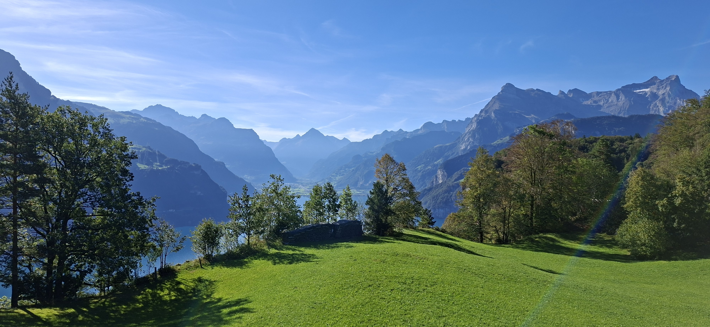
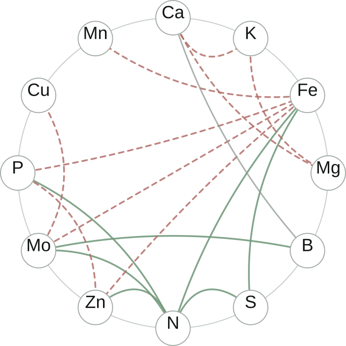

Senior Scientist · Lucerne, Switzerland
Emmanuel
Tergemina
Quantitative genetics · Genomics · Molecular biology
I investigate how genetic and environmental variation shapes complex traits in plants, combining experimental and computational approaches.

Research areas

Ionomics
Investigating the genetic and environmental factors underlying variation in plant elemental composition.

Exploring the genetic basis of complex trait variation
Dissecting the genetic basis of complex traits using quantitative genetic approaches in natural populations and mapping populations.

Functional molecular genetics
Characterizing the molecular and phenotypic effects of genetic variation.